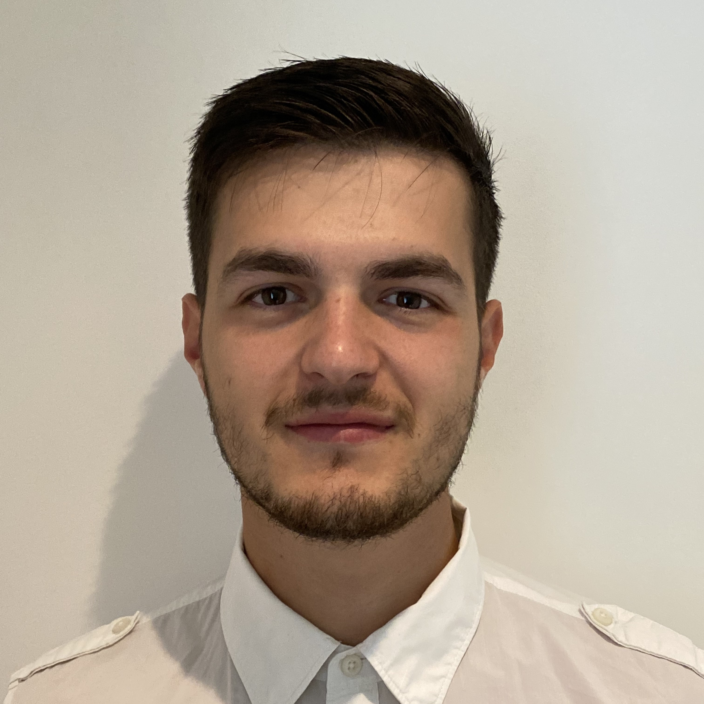

Welcome! You're either a bot or a potential employer, nonetheless, take a look around. I hope you like what you see.

About Me
I am a 25-year-old Network Engineer and Esports Enthusiast. With a strong passion for learning, I continuously seek out new topics and expand my knowledge. As a quick learner and logical thinker, I thrive in environments that challenge my intellect and problem-solving abilities.
I have worked on may big projects such deploying a CDN Provider Network in Cyprus. Commissioning and decommissioning of Data Centres in London, and also ensuring managed clients are compliant with The Telecommunications (Security) Act 2021 (TSA 2021) before the April 2024 deadline.
Experience
Network Engineer
Elite - Full-timeSep 2021 - PresentPortsmouth, England, United Kingdom
TDA Role, implementation, documentation and maintenance for some of the following services, but not limited to:
ISP Core MPLS Routing
MPLS IPv6 deployment with OSPFv3
Hands-on Data Centre Experience with Fibre Optics, DWDM, MUXs and other transport mediums.
CPE Vendor Shift (From Juniper SRX to Ubiquiti Edge Routers) - For Simpler Remote Management
Managed Services for CPE (Provisioning, Security Scanning and Remote Upgrades)
Full Cloud Server Hosting Platform Deployment (with redundant DCs and off-site Backup Configurations)
Monitoring Implementation for 1-minute alerting to identify issues promptly
CDN Planning, Design and Deployment
Full IPv4 and IPv6 iBGP and IGP Mesh Deployment
EVPN-VXLAN Planning, Design and Deployment
Full Change Control Implementation for Managed Solutions
Technologies worked with: Ethernet Switching, VPLS, EVPN-VXLAN, ISP Routing, Full MPLS, L3-7 NGFW, Unifi SDN, VPN
Vendors worked with: Cisco, Juniper, Fortigate, Huawei, VyOS, Linux Routing (VTYSH), Netgate, Dell, Supermicro
Other key skill acquired: L2TP with LAC/LNS, RADIUS/TACACS/AAA, Wireshark/TCP Dump, IPS/IDS, QoS, Cloud-Init, Docker, Proxmox, Ubuntu, CentOS, Kali Linux
On-call – As part of a Rota and Escalation Policy
Summer Network Intern
Hey!Broadband Ltd. - Full-timeAug 2020 - Oct 2020 · 3 mosHorsham, England, United Kingdom
I worked with HeyBroadband in a large variety of roles throughout my summer internship. I worked in sales, monitoring networks, pitching presentations to the CEO and even splicing fibres in the streets.
I enjoyed my time with them and gained a lot of knowledge of how FTTP is playing an essential role in the future of our connected world.
In the time that I spent with them, I also gained relevant experience in what I would then go on to learn about in my final year studies, which gave me a small head start.
Founder & President of Portsmouth Paladins Esports Society
University of Portsmouth - Full-timeOct 2018 - Sep 2020 · 2 yrsPortsmouth, England, United Kingdom
I started University in 2018 and at the time I really liked competing in online video games. I struggled to find teammates to create a CS:GO team with so I set out on a mission to create a place for likeminded individuals to come together and find players to create teams with. I did this through creating the Esports Society (Portsmouth Paladins).
Some notable achievements are:
Secure sponsorship from Reign by Novatech. Press Release
Organised our first Freshers Fayre event which gave us traction to become the 3rd largest "non-sporting" society with 300+ members.
Achieved Finals of SouthLANder event where Reign by Novatech provided us with their PC's to take to LAN. Press Release
Other Notable achievements and experiences:
Created a platform for students to come together and compete together against other universities.
Hosted LAN Events in partnership with Reign by Novatech for charity.
Actively delegated with roles across the society, including formed a committee.
System Builder and Content Production
Novatech Limited - Indirect ContractJun 2019 - Jun 2019 · 1 moPortsmouth, England, United Kingdom
Responsible for the testing of pre-released hardware which was protected by an NDA (AMD Ryzen 3000 Series at the time), logged information and statistics for benchmarking and producing footage which were in turn used to advertise their Reign Pre-built PC's.
Education
University of Portsmouth
Master of Science - MSc, Computer Systems Networking and TelecommunicationsSep 2021 - Sep 2022Grade: Distinction - 75.2%
Modules Studied:
Cloud Computing
Computer Security
Enterprise Network Design and Management
ICT Configuration and Administration
Individual Project (Network Deployment for a CDN)
University of Portsmouth
Bachelor of Science - BSc, Computer NetworksSep 2018 - Jun 2021Grade: First-Class Honours - 3.59 GPA
Activities and societies:
Computer Networks - Course Representative
Founded the Esports Society (Portsmouth Paladins)
Participated in and won a National University CS:GO Tournament
Founder of Esports Society - Portsmouth Paladins
BSc Computer Networks Course Representative
Units Studied (2018-2021):
Year 1 - 2018/19
Scientific Principles for ICT
Linux and Windows Server - System Administration and Internetworking
Introduction to Algorithms and Programming
Fundamentals of Computer Systems
Writing and Research in the Workplace
Concepts of Data Communication Networks
Year 2 - 2019/2020
Cisco's Wide Area Networks
Cisco's Routing and Switching
Network Simulation and Traffic Management
Ethical Hacking
Virtualisation and Cloud Computing
Network Servers and Services
Year 3 - 2020/2021
Malware Forensics
Wireless Networks
Enterprise and ISP Network Solutions
Network Design
Individual Project (Building an ISP for a Developing Country)
Skills
Network Design: Configuration, Deployment, Troubleshooting, Monitoring and Management
This project aimed to shed light on building an ISP tailored for a developing country. Delving into infrastructure, accessibility, and sustainability, it aimed to provide valuable insights for bridging connectivity gaps.
Content Delivery Network: Elite Limited's Client
This project dives deep into CDN fundamentals, deployment strategies, and our meticulous plan for implementation of a CDN in Cyprus. With the funding of Elite Limited's client we was able to complete this project with success. Bringing enhanced service quality through comprehensive network design and execution